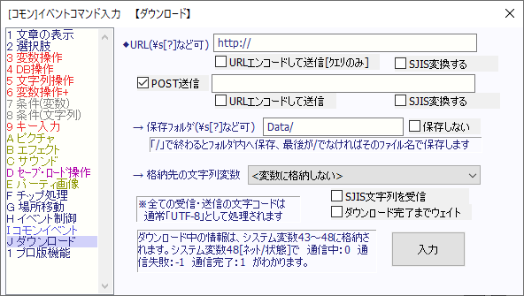

イベントコマンド 【ダウンロード】
インターネット上からファイルをダウンロードしたり、CGIを呼び出したり、POST送信したりできます。

【基本的な説明】
・このコマンドを使用するためには、「エディターオプション」の「上級者向けコマンドを使用する」チェックを入れる必要があります。
・各テキスト欄には全て、通常の文字列の他に特殊文字（例：\s[?]など）を使用することができます。
・無自覚にサーバアタックをしてしまうことを防ぐため、1分以内に連続して接続すると、次の接続までの数秒間のウェイトが入るようになっています。
・「プレイヤー名」などプレイヤーが自由にキーボード入力できる内容を送信する場合は、よく分からなくても半角「&」や「=」を【文字列操作】で「全て消去」しておく（あるいは全角「＆」や全角「=」に変換する）のがセキュリティ的に安全です。
【各部の説明】
１．URL
接続先のURLを指定することができます。
・URLエンコードして送信[ｸｴﾘのみ] ： URLの 「? 以降の文字列」がURLエンコードされて接続されます。日本語文字が「あ」→「%E3%81%82」のように変換されます。またこのURLエンコードは、アルファベット、数字、記号の「*」「.」「-」「_」「&」「=」のみ変換しません。
（クエリーをURLエンコードする場合、「&」や「=」が違う文字になっているとフォームデータ受信の方法が使えなくなるため。基本的にこれで問題はないと思います。プレイヤー側で半角「&」や半角「=」が使われないよう注意してください）
・SJIS変換する： 通常「UTF-8」文字コードとして送信されるURLが、SJIS（他の言語ならそれぞれのマルチバイト文字コード）に変換されます。
2．POST送信
指定URLのサーバプログラムにPOST送信できます。
POST受信するためのサーバプログラムをサーバ上に実装する必要があります。
・URLエンコードして送信 ： 送信内容がURLエンコードされて接続されます。「URL」のものと同様です。
・SJIS変換する： 通常「UTF-8」文字コードとして送信されるURLが、SJIS（他の言語ならそれぞれのマルチバイト文字コード）に変換されます。
3．保存フォルダ
ダウンロードしたファイルの保存先です。EXEがあるフォルダからの相対フォルダを指定します（「Data/」など）
→ 「/」で終わる場合、URL側で指定されたファイル名のままフォルダ内へファイル保存します。
→ 最後が「/」でない場合（最後にファイル名が来る場合）は、ダウンロードしたファイルをそのファイル名に変更して保存します。
※「保存フォルダ」の文字列に「//」「\\」「..」「./」「.\」「%」「:」「*」「?」「"」「<」「>」「|」が含まれているとエラーが出ますので注意してください(Ver3.00より)
4．格納先の文字列変数
ダウンロードした内容を文字列変数に格納できます。
[P]コマンドについてはこちらをご覧ください→ [P]
・SJIS変換で受信： 通常受け取った文字列は「UTF-8」文字コードとして認識しますが、これをオンにするとSJIS（あるいは言語別のマルチバイト）文字コードとして認識されます。
・ダウンロード完了までウェイト： オンにすると、ダウンロード完了までイベント処理を停止させます。
【裏技1】 オンラインアップデート用の隠し機能
『Data/_NetDownloadData』を保存フォルダとして設定すると、そのフォルダ内に入れたファイルが
ゲームの次回起動時に、フォルダ構造を維持したまま『Data』フォルダ内に移動します
（すでにファイルがある場合は上書きされます）。
これで何ができるかというと、たとえばプレイ中には上書きできない『Basicdata.wolf』ファイルなどの
更新が可能となります。その際、ゲームの再起動はプレイヤーの手動で行ってもらうよう、うながしてください。
【裏技2】 通信の強制切断
実はシステム変数48「[読]ﾈｯﾄ/状態 -1失敗 0通信中 1終了」に「-1」を代入すると、通信を強制的に中断させることができます。
ただし変なファイルが残ったりする場合もあるので、あまり推奨されません。
【裏技3】 POST送信時のContent-Typeを変更する
「POST送信」文のどこでも「<<CONTENT>>～～<<CONTENT_END>>」と入れると
送信時のContent-Typeヘッダを～～部分で上書きすることができます。
相手側のサービスの仕様に合わせてContent-Typeを変えて送信する必要がある場合にご利用ください。
【入力例】
<<CONTENT>>application/json<<CONTENT_END>>～ここにPOSTしたい内容～
→ こう入力すると「Content-Type」が「application/json」として送信されます。
※デフォルトでは「<<CONTENT>>application/x-www-form-urlencoded<<CONTENT_END>>」が入っているのと同じ処理が行われています。
※「<<CONTENT>>～<<CONTENT_END>>」の部分は送信時に削除されます。
【裏技4】 http(s)://localhost への接続に限り、連続接続ウェイトは増加しない
【ダウンロード】機能は1分以内に連続して接続を行うと待ち時間が増加していきますが、
接続先URLが自分である「http://localhost:～」や「https://localhost/～」などから始まる場合に限り
連続接続時のウェイトが増加しないようになっています（Ver3.106以降）。
なお、「localhost」と全く同じ意味ですが「http://127.0.0.1」という表記では
この効果は適用されませんのでご注意ください。
その場合は、「127.0.0.1」の部分を「localhost」に書き替えてご利用ください。